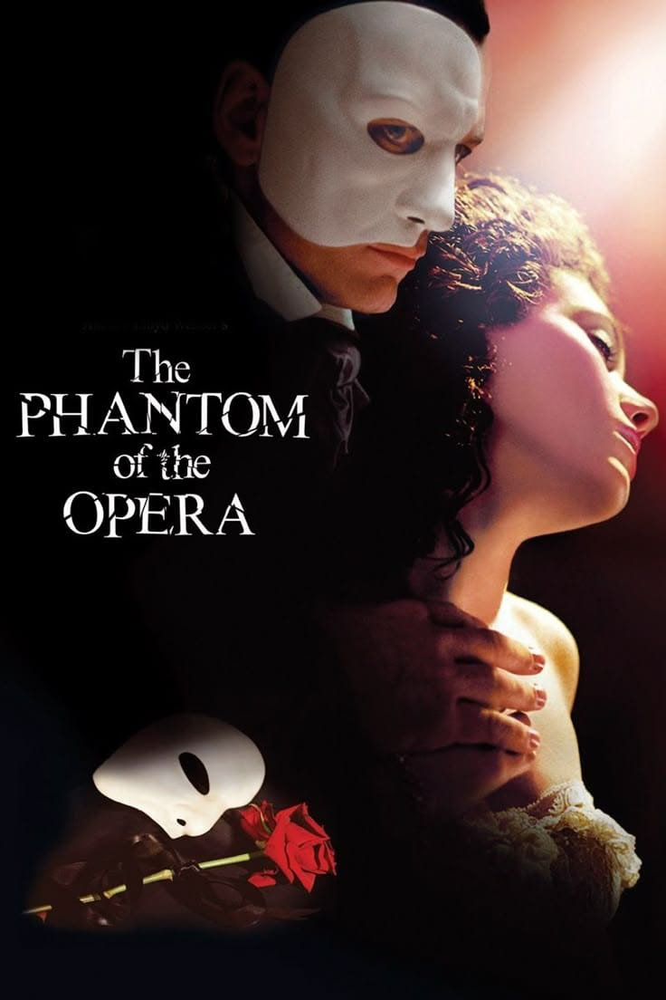

Una de las obras más famosas del teatro musical, basada en la novela de Gaston Leroux y ambientada en la Ópera de París.

The Phantom of the Opera es un musical con música de Andrew Lloyd Webber y letras de Charles Hart. Está basado en la novela Le Fantôme de l'Opéra, escrita por el autor francés Gaston Leroux y publicada originalmente en 1910.
La historia se desarrolla principalmente en la Ópera de París durante el siglo XIX. En el teatro comienzan a suceder hechos extraños y los trabajadores atribuyen algunos de ellos al misterioso Fantasma de la Ópera, una figura que vive en las zonas ocultas del edificio.
Christine Daaé es una joven bailarina y cantante que trabaja en la ópera. Después de recibir una serie de enseñanzas de una misteriosa figura a la que considera su Ángel de la Música, comienza a desarrollar sus habilidades como cantante.
El Fantasma se encuentra profundamente interesado en Christine y utiliza su influencia dentro de la ópera para favorecer su carrera. Sin embargo, su relación con ella se vuelve cada vez más complicada.
Christine vuelve a encontrarse con Raoul, el vizconde de Chagny, a quien conocía desde su infancia. Los dos comienzan a desarrollar una relación, provocando los celos del Fantasma.
Mientras Christine consigue reconocimiento como cantante, el Fantasma continúa ejerciendo influencia sobre la Ópera de París. Sus acciones provocan miedo entre los propietarios, artistas y trabajadores del teatro.
El conflicto aumenta cuando el Fantasma secuestra a Christine y la lleva a su hogar subterráneo. Allí ella descubre el mundo oculto que existe debajo de la ópera y conoce de una manera más cercana al hombre que se encuentra detrás de la máscara.
La historia combina romance, misterio, tragedia y elementos propios del teatro gótico. También explora temas como la soledad, el rechazo, la obsesión, el amor y la necesidad de ser aceptado por los demás.
| Número | Canción | Personajes |
|---|---|---|
| 1 | Think of Me | Christine y Raoul |
| 2 | The Phantom of the Opera | Christine y el Fantasma |
| 3 | The Music of the Night | El Fantasma |
| 4 | All I Ask of You | Christine y Raoul |
| 5 | Masquerade | Elenco |
| 6 | Wishing You Were Somehow Here Again | Christine |
| 7 | The Point of No Return | Christine y el Fantasma |
Ver videos de The Phantom of the Opera en YouTube
Página oficial de The Phantom of the Opera
Popularidad internacional:
Importancia dentro del teatro musical:
The Phantom of the Opera se convirtió en uno de los musicales más reconocidos de Andrew Lloyd Webber y en una de las producciones de mayor duración en la historia de Broadway y del West End.
La producción original de Londres se estrenó en 1986 y la producción de Broadway comenzó en 1988. La obra recibió numerosos premios, entre ellos siete premios Tony en 1988, incluido el premio a Mejor Musical.
Su famosa escenografía, especialmente la gran lámpara de la Ópera de París, se convirtió en uno de los elementos visuales más reconocibles del teatro musical.
| Año | Evento | Impacto |
|---|---|---|
| 1910 | Publicación de la novela | Gaston Leroux presenta la historia original |
| 1986 | Estreno en Londres | Comienza la producción musical |
| 1988 | Estreno en Broadway | La obra llega a Estados Unidos |
| 1988 | Premios Tony | Obtiene siete premios, incluido Mejor Musical |
| Actualidad | Producciones internacionales | Continúa siendo representado internacionalmente |
Página oficial
Videos de las canciones en YouTube
Wikipedia - El fantasma de la ópera
Haz clic sobre la máscara cuando aparezca para conseguir puntos.
Puntos: 0
Puntos obtenidos:
+Resultado: 8